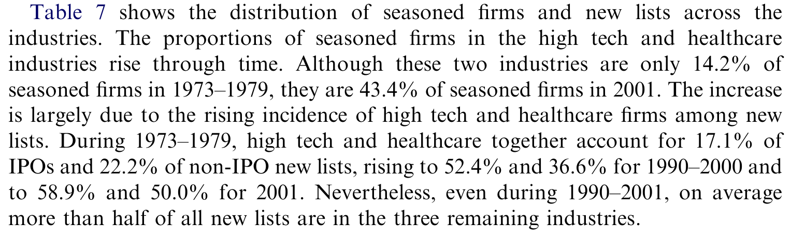
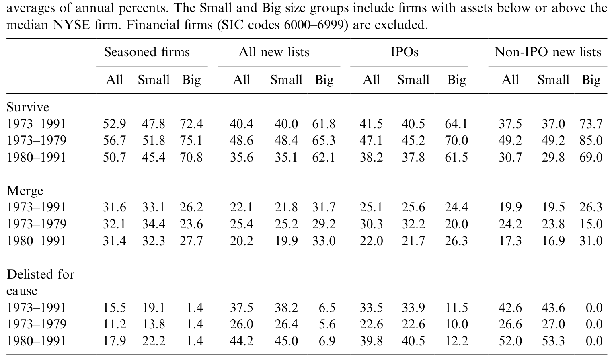
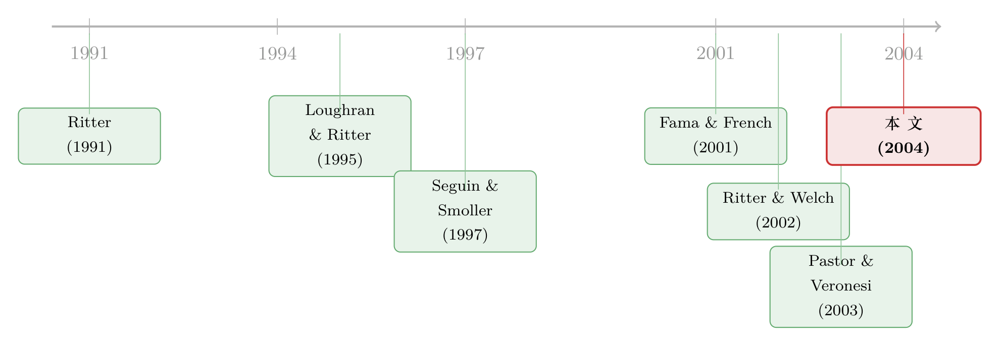

上市的门，为什么越开越大，进来的公司却越死越快？
本文读的是 Fama and French (2004, Journal of Financial Economics)：从 1980 年起，美国股市的「新上市」数量井喷——年均新上市从 1973–1979 年的 156 家暴增到 1980–2001 年的 549 家；但与此同时，新上市公司的盈利分布越来越向左偏、增长分布越来越向右偏，存活率随之崩塌——1991 年那一批新上市公司，十年存活率只有 37.0%。作者给这一切找了一个统一的解释：不是公司变多了，而是权益资本的成本降了，于是更弱、回报更遥远的公司也被放进了门。
1 一个反直觉的开场
先说一个看上去自相矛盾的事实。
如果你只看上市公司的数量，过去三十年是公开股权市场的黄金时代：愿意、并且有资格走上纽交所、美交所或纳斯达克的公司越来越多。可如果你跟踪这些新来者的命运，结论却恰恰相反——它们死得一年比一年快。一边是越敞越大的门，一边是越来越短的寿命，这两件事怎么会同时发生？
这正是本文要回答的问题。Fama 和 French 把目光投向 1973–2001 年间所有在美国主板市场首次出现的公司，他们称之为「新上市」(new lists)，并追踪它们上市后头五年的基本面，以及它们头十年的「生死」。一个朴素的猜想是：新公司多了，无非是经济好、机会多。但作者发现，真正在变的不是数量本身，而是这批公司「长什么样」——而样子一变，命运就跟着变了。
这里的「新上市」比「首次公开发行」(initial public offering, IPO) 更宽。它既包括 IPO，也包括那些第一次出现在 CRSP 上、却没被 IPO 数据库捕捉到的公司（多半是尽力承销发行、或互助机构转制而来的公司）。用作者的话说，能挂上三大市场的牌子，本身就是「这家公司有资格参与不受限风险分担」的一个信号。
2 把问题画成一张供需图
要理解后面的全部证据，得先停在论文第 2 节那张极简的供需图（Fig. 1）上——这是全文的骨架。
作者把新上市公司的股权融资，画成一个关于权益资本成本 (cost of equity capital, \(E(R)\)) 的市场。横轴是融资数量，纵轴是 \(E(R)\)。
需求曲线向下倾斜。 道理很直白：\(E(R)\) 越低，那些更弱的公司、以及预期回报更靠后的公司，它们的项目现值才会由负转正，才「划算」上市来融资。换句话说，资本越便宜，门槛后面排队的弱公司就越多。
供给曲线向上倾斜，但可能相当平坦。 因为新上市公司体量太小——哪怕它们数量爆炸，加总起来相对于整个资本市场也微不足道（1980–2001 年，新上市公司只占全部上市公司总市值的 1.99%，最高的年份也没超过 3.70%）。供给端几乎是「要多少有多少」，曲线接近水平。
接着，一个自然的问题是：1980 年以后那波「不赚钱、却高速成长」的新公司潮，到底是需求推的，还是供给推的？
很多人——包括论文的一些审稿人——的第一反应是需求：是不是生物科技、互联网这些「研发周期长、回报来得慢」的新行业，自己跑来要钱了？但这张图给了一个漂亮的反驳。如果是需求曲线向右移，在一条向上的供给曲线下，结果会是 \(E(R)\) 的门槛抬高——这意味着更弱的公司反而被挤出市场。这和我们看到的「越往后越多弱公司进来」正好相反。需求曲线向左移倒是能解释弱公司变多，可那又跟「新上市数量井喷」矛盾了。
于是反转出现了：唯一能同时解释「数量暴增」和「质量下滑」的，是供给曲线整体下移——也就是新上市公司的权益资本成本下降了。资本一便宜，门槛 \(E(R)\) 下沉，原本够不着的弱公司、回报遥远的公司，一股脑被放了进来。论文剩下的所有证据，本质上都是在为这一条线作证。
3 数据：怎么定义「新上市」与「生死」
证据的可信度，先取决于样本干不干净。
作者的新上市样本来自 CRSP，只保留股票代码为 10 或 11 的普通股（排除 ADR、封闭式基金）。新上市的定义是一家公司（PERMCO）第一次出现在 CRSP 上；同时剔除分拆 (spinoffs)、私有化后再上市、双层股权、以及跟踪股票——理由是这些公司本质上更「成熟」，和典型新上市不是一类。样本从 1973 年起，因为这是 CRSP 纳入纳斯达克的起点；在此之前的新公司多在场外交易，CRSP 看不见。事实上，本文 90% 以上的新上市公司都在纳斯达克。
IPO 子样本来自三处的并集：Loughran and Ritter (1995) 更新版、Eckbo and Norli (2001)、以及 Thomson Financial 的 Global New Issues 数据库。基本面数据来自 Compustat，这会损失掉金融公司（约占新上市的 20%）。
两个核心变量是：盈利能力 E/A（息前税后利润 / 资产）与资产增长 dA/A。
这里有一个老实人才会主动交代的偏误：Compustat 对新上市公司的覆盖随时间变好。1973–1979 年，约 16% 的非金融新上市在头五年里查不到任何 E/A 数据；这个比例到 1980–1989 年降到约 10%，1990–2000 年只剩约 2%。而那些缺数据的公司，往往正是后来退市或被并购的弱公司。换句话说，早期样本系统性地「漏掉了更多弱公司」，这会让结果偏向于「越往后弱公司越多」的结论。作者的处理是诚实地承认它，并论证 1985 年以后覆盖已相当完整，缺失数据不足以解释后面的发现——这是本文识别上最需要被盯住的一点，下文还会回到它。
4 数量井喷，但「最小的那一批」反而变少了
先看量。新上市数量在 1979 年之后陡然起跳：从 1979 年的 220 家，跳到 1980 年的 434 家、1981 年的 601 家。1979 年以后，只有五年新上市少于 400 家。年均口径上，1973–1979 年是 156 家，1980–2001 年是 549 家。井喷之后，平均每年约有 10% 的上市公司是新面孔。
但这里有一个容易被误读的细节，作者特意强调：数量井喷，并不是因为涌进来一堆「最小最小」的公司。恰恰相反，极小公司的左尾在变薄——低于纽交所市值第 10 百分位的新上市占比，从 1973–1979 年的 78.7% 降到 1990–2000 年的 51.7%。以各自所在市场衡量，新上市公司其实是「中等个头」（1973–2001 年全部新上市的本地市场市值百分位均值是 50.8），IPO 还比非 IPO 更大些（本地市场百分位 55.8 vs 42.7）。
这一点为什么关键？因为它堵死了一个偷懒的解释：你不能说「后来质量变差，是因为越来越多迷你公司混进来了」。个头没变小，变的是基本面的形状。
接着就到了全文的核心词——偏度 (skewness)。在新上市丰沛的 1980–2001 年，新上市公司盈利能力的横截面整体下移，而且下移在左尾更猛（即越来越多公司滑向极低盈利）；与此同时，增长的横截面变得越来越右偏（即越来越多公司奔向极高增长）。等这些新上市熬成成熟公司 (seasoned firms)，它们也会显示出这套模式的「减弱版」。作者反复提醒：虽然 1994 年互联网公司涌现后这个过程加速了，但「低盈利 + 高增长」公司比例的上升，是一个长达二十年的长期趋势，而非互联网泡沫的一次性产物。
如表 7 所示，把新上市公司和成熟公司的盈利与增长分布逐年铺开，左偏的盈利和右偏的增长一目了然。

Table 7: shows the distribution of seasoned firms and new lists across the
「低盈利 + 高增长」是一个危险的组合——它意味着公司把希望押在了遥远的未来，而当下几乎不产生现金。这种组合，注定会带来一大批不幸的结局。
5 存活率的崩塌
于是，一个自然的问题是：基本面变成这样，公司还活得下去吗？
答案是触目惊心的。作者用「上市后第 N 年仍在交易」来度量存活率，结果如表 9：

Table 9: summarizes average survival rates, specifically, percents of firms still
最刺眼的几个数字：
- 成熟公司「再活十年」的概率，从 1973 年队列的
60.6%跌到 1991 年队列的46.9%； - 新上市公司头十年的存活率跌得更狠，从 1973 年队列的
61.0%一路滑到 1991 年队列的37.0%。
那么，公司是怎么「消失」的？无非两条路：被并购，或因业绩太差被退市 (delist)。作者把两者拆开，发现了一个干净利落的结论——
并购率几乎没怎么变：平均而言，约三分之一的成熟公司、五分之一的新上市公司，会在十年内被并购吸收，这个比例在样本期内没有明显趋势。
真正崩掉的是退市。成熟公司的十年退市率从 1973 年的 15.6% 微升到 1980–1991 年队列的 17.9%；而新上市公司的十年退市率，从 1973 年队列的 16.9% 暴涨到 1980–1991 年队列的 44.2%。也就是说——1980–1991 年的新上市公司里，超过五分之二在十年内因业绩太差被赶出了市场。
存活率的崩塌，不是因为大家都被并购走了，而是因为越来越多公司「自己撑不住」。而撑不住的根源，正是第 4 节那个「低盈利 + 高增长」的形状。把第 4 节和第 5 节连起来，论文的故事就闭环了：资本变便宜 → 弱公司、回报遥远的公司被放进门 → 新上市的盈利更左偏、增长更右偏 → 存活率随之崩塌。一条线，从头串到尾。
（关于「上市公司为什么会成批消失」这个更宏观的问题，可参见《美国为什么「丢」了一半上市公司？》；而关于 IPO 后长期表现为何看上去那么糟、有多少其实是一道算术题，可参见《为什么「上市后跌跌不休」可能是一道算术题？》。）
6 文献脉络
这篇论文站在一条很清晰的研究脉络上。
最早，人们关心的是 IPO 的长期收益之谜：Ritter (1991) 发现新股上市后长期跑输，Loughran and Ritter (1995) 把它做成了著名的「新发行之谜」(the new issues puzzle)。紧接着，研究者把视线从「收益」转向「经营基本面」——Jain and Kini (1994)、Mikkelson, Partch, and Shah (1997) 都记录了公司上市后经营业绩的下滑。
然后，一个更直接的前身是 Seguin and Smoller (1997)：他们专门研究了 1974–1988 年纳斯达克新上市公司五年后的状态（交易、被并、退市），把「股价与死亡率」联系起来。本文正是沿着这条线往前推——不止看平均数，而是看整个横截面如何随时间演变，并把基本面的变化和存活率直接挂钩。
再往近处看，是作者自己的前作 Fama and French (2001)：那篇文章已经记录了 1979 年后新上市的井喷、首年盈利的下滑和首年增长的上升，但只看了上市当年。Ritter and Welch (2002) 综述了 1980–2001 年 IPO 的活跃度、定价与配售，也给出了上市前一年负盈利公司的比例证据。
本文还和两支看似无关的文献遥相呼应：Campbell, Lettau, Malkiel, and Xu (2001) 发现个股收益的横截面离散度在上升、且主要来自小公司；Pastor and Veronesi (2003) 则指出上市公司盈利能力的离散度在上升，并认为这可能解释前者。本文恰好提供了一个底层机制——离散度的上升，源自盈利与增长偏度的上升，而后者主要来自 1979 年之后那波涌入的小型新上市公司。

7 评论与延伸（Q&A + 研究方向）
(a) 几个可能的疑问
Q：作者说是「供给曲线下移」（资本变便宜），可这是结构识别出来的吗，还是只是一张图讲出来的故事？
老实说，这是本文最弱的一环。供需框架是定性的、图示的，没有结构估计，也没有外生冲击去钉死供给曲线真的移动了。作者的论证靠的是「排除法」：需求右移会抬高门槛、挤出弱公司，与证据矛盾；需求左移又与数量井喷矛盾；唯有供给下移能同时解释「量增 + 质降」。这是一个有说服力的逻辑推断，但不是因果识别。读者应把「资本成本下降」当作一个最一致的解释，而非被证明的结论。
Q：会不会只是 1990 年代末互联网泡沫一次性的产物？
作者花了很大力气反驳这一点。盈利左偏、增长右偏的趋势从 1980 年代初就开始，是一个长达二十年的渐进过程；1994 年互联网公司涌现只是加速了它，而非创造了它。所以这不是一个「泡沫年代特例」的故事。
Q：那个「Compustat 覆盖随时间变好」的偏误，会不会把整个结论做反了？
这是最需要警惕的威胁，因为缺数据的公司恰恰是后来要退市的弱公司，早期漏得多，会人为制造「越往后弱公司越多」的假象。作者的辩护有三：其一，1985 年后覆盖已相当完整，之后的盈利演变不能归因于缺失数据；其二，只有「缺
E/A且最终因业绩退市」的公司才构成问题，而它们数量不足以解释结果；其三，存活率本身用的是 CRSP 而非 Compustat，不受这个偏误影响。综合看，偏误存在，但方向和量级都不足以推翻结论。
Q：为什么强调「主要来自小型新上市公司」，这不正说明它不重要吗？
恰恰相反。大公司占据了大多数经济总量，所以小公司对 GDP 之类的加总量「不重要」。但本文关心的是「哪类公司有资格获得公开股权融资」——这是关于风险分担边界的问题。小型新上市公司的特征变化，正告诉我们：低盈利、高增长这类「高风险、回报遥远」的公司，正越来越多地被纳入公开市场，由分散的投资者共担其风险。
Q：并购率没变、退市率暴涨——这个拆分为什么重要？
因为它排除了「公司只是被买走了」这种良性解释。如果存活率下降主要靠并购，那不过是市场在做资源重配；但本文显示下降几乎全部来自因业绩退市（新上市十年退市率
16.9%→44.2%），这说明进来的确实是一批更脆弱、更容易经营失败的公司。
Q：这对「公开市场是否更有效」意味着什么？
如果证券价格是理性的，那么公开可交易公司的范围扩大，可能恰恰意味着投资和风险分担的效率在改善——更多有价值的项目得到了公开融资，风险被更有效地分散。换句话说，存活率下降未必是坏事：它是「门槛降低、更多人能进场」的副产品。本文小心地把「描述」和「福利判断」分开，没有简单地把高死亡率读成市场失灵。
(b) 几个可能的研究问题与提案
1. 把「供给曲线下移」做成一次真正的识别。 【经济故事】本文最大的留白就是：权益资本成本下降只是定性推断。如果能找到一个外生冲击（如某次降低发行成本的监管改革、做市制度变化、或税收变动），就能直接检验「供给下移 → 更多弱公司进场 → 存活率下降」这条链。 【可行性】中。难点在于找到只动供给、不动需求的工具；纳斯达克上市规则的几次离散调整（本文 Table 2 已整理）或可作为断点回归的素材，但规则本身可能内生于市场状况，需谨慎。
2. 把这套「新上市基本面 → 存活率」的框架搬到公司债/信用市场。 【经济故事】债券市场也有它的「门槛」——什么样的发行人能进入公开债市。如果信用利差（债的「资本成本」）系统性下降，是否也会把更弱的发行人放进门，从而抬高后续违约率？这正是本文逻辑在信用市场的镜像。 【可行性】高。Mergent FISD + TRACE 提供发行人特征与违约/退市记录，可按「首次发债年份」分组构造存活曲线，识别上比股票更干净（违约是清晰事件）。
3. 外资持有人会不会改变「门槛」？ 【经济故事】如果外国投资者的进入压低了一国的权益（或债务）资本成本，本文的框架预测：更弱、回报更遥远的公司会被放进公开市场，本地新上市的存活率应随之下降。这把「资本成本」这个抽象变量，落到了一个可观测的资金流上。 【可行性】中。可用各国资本账户开放/「可投资度」提升作为外资进入的外生变化，配合跨国新上市与退市数据；识别依赖开放时点的准外生性。
4. 偏度本身能不能定价？ 【经济故事】本文记录了新上市盈利左偏、增长右偏的横截面演变。一个自然的延伸是：这种「彩票式」的横截面（少数巨赢、多数平庸或失败）会不会被投资者偏好定价，从而解释新上市公司的低长期收益？这把本文的描述性发现接到了资产定价上。 【可行性】高。可直接用 CRSP/Compustat 构造行业-年份层面的盈利/增长偏度，检验其对横截面收益的预测力。
5. 上市规则的「门」到底关住了谁？ 【经济故事】本文 Table 2 显示纳斯达克的上市门槛一路抬高，且盈利从来不是硬性要求。一个有意思的问题是：每一次门槛调整，到底改变了进场公司的哪一个特征（规模？盈利？增长？），又如何反过来改变了后续存活率？ 【可行性】中高。规则变更日期明确，可做事件研究/断点回归；但需处理规则内生于市场状况这一隐忧（本文自己也指出，上市要求很可能是供需的「结果」而非「原因」）。
我的总体判断是这样的。本文的贡献在于：它没有停在「平均数」上，而是把新上市公司整整二十多年的盈利与增长横截面逐年铺开，用「偏度」这一个核心词，把「数量井喷」「基本面恶化」「存活率崩塌」三件原本散落的事实，串成了一条逻辑自洽的因果链，并给出了一个朴素却有力的统一解释——权益资本成本的下降。这种「让数据自己讲一个完整故事」的写法，是 Fama–French 一贯的功力。
我对识别的担忧主要有两点：其一，核心机制（供给曲线下移）始终停留在定性的供需图层面，缺乏外生变动来钉死它，所以「资本变便宜」更像是一个最自洽的解释，而非被证明的结论；其二，Compustat 覆盖随时间改善带来的样本选择偏误，虽经作者多方辩护，但它和核心结论的方向恰好一致，读者有理由保留一分警惕。
如果要往下看，我最想看到的是有人把那条「供给曲线」真正外生地移动一次——无论是用一次发行成本的制度改革，还是用外资进入压低资本成本的跨国实验——然后检验存活率是否如本文预测的那样应声而落。那将把这篇优雅的描述性论文，升级为一个可被证伪的因果命题。
参考文献
- Campbell, J., Lettau, M., Malkiel, B., Xu, Y. (2001). Have individual stocks become more volatile? An empirical investigation of idiosyncratic risk. Journal of Finance 56, 1–43.
- Eckbo, B. E., Norli, O. (2001). Liquidity risk, leverage, and long-run IPO returns. Working paper, Tuck School of Business, Dartmouth College.
- Fama, E., French, K. (2001). Disappearing dividends: Changing firm characteristics or lower propensity to pay? Journal of Financial Economics 60, 3–43.
- Fama, E., French, K. (2004). New lists: Fundamentals and survival rates. Journal of Financial Economics 73(2), 229–269.
- Jain, B., Kini, O. (1994). The post-issue operating performance of IPO firms. Journal of Finance 49, 1699–1726.
- Loughran, T., Ritter, J. (1995). The new issues puzzle. Journal of Finance 50, 23–51.
- Mikkelson, W., Partch, M., Shah, K. (1997). Ownership and operating performance of companies that go public. Journal of Financial Economics 44, 281–307.
- Pastor, L., Veronesi, P. (2003). Stock valuation and learning about profitability. Journal of Finance 58, 1749–1790.
- Ritter, J. (1991). The long-run performance of initial public offerings. Journal of Finance 46, 3–27.
- Ritter, J., Welch, I. (2002). A review of IPO activity, pricing and allocations. Journal of Finance 57, 1795–1828.
- Seguin, P., Smoller, M. (1997). Share price and mortality: An empirical evaluation of newly listed Nasdaq stocks. Journal of Financial Economics 45, 333–363.